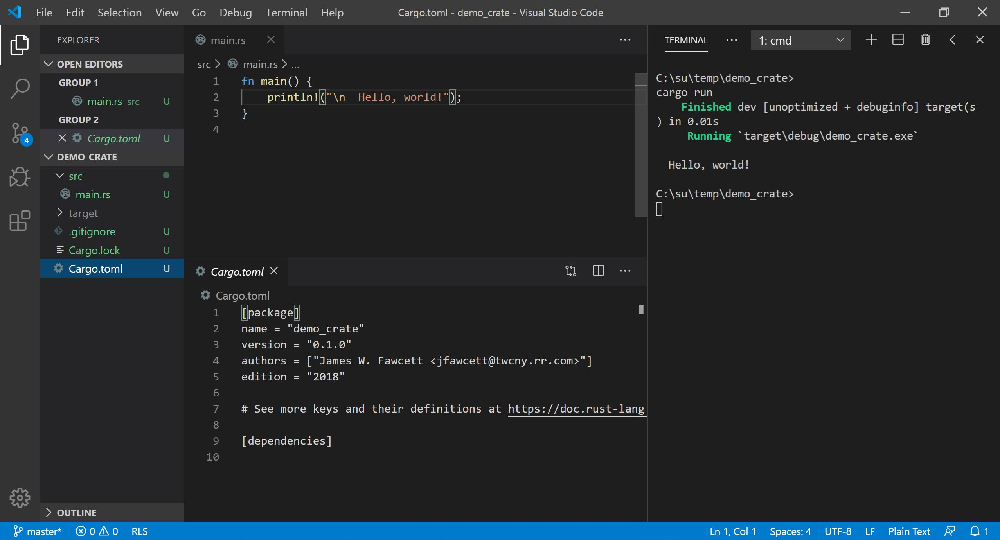

RustBites_Intro.html
copyright © James Fawcett
Revised: 07/31/2026
copyright © James Fawcett
Revised: 07/31/2026
Rust Bites - Introduction
Why Rust, What are Bites?
Ownership rules all
Borrow checker stands its ground,
Safety without fear.
- Haiku by ChatGPT 4o
Borrow checker stands its ground,
Safety without fear.
- Haiku by ChatGPT 4o
Why Rust?
The job market for Rust Developers
is smaller than for traditional languages like C++, C#, and Java, but grows rapidly.
Things you need to know:
- Rust supports creation of user-defined value types with construction and cloning of independent instance copies. Managed languages like C# and Java copy handles to instances on the heap, so an assignment in those languages produces two handles pointing to the same instance.
-
Rust has two categories of types:
- Copy types are contiguous bytes of memory or aggregates of copy types. Assignment produces two independent copies of the same value that may diverge later.
-
Move types are structured blocks of both static and native heap memory.
For example, a Vec<T> holds a control block in the stack and an array of T's in the native heap. Assignment transfers ownership of the array to a new control block. The source instance becomes invalid, and the compiler enforces that.
- The Rust language compiles to native code that runs directly in a new process. Code for managed languages runs in a virtual machine hosted by a new process. That affects both latency and throughput.
- Rust's clever type system design and strict static typing make it relatively easy to use. For safety, its references cannot share mutability. As a result, builds fail repeatedly until you remove all safety violations. Compiler error messages are excellent, so fixing them isn't as difficult as it would otherwise be.
Rust Highs
-
Memory and Data Race Safety Compiler-enforced data ownership and reference rules ensure Memory and Data Race safety. -
Performance Rust compiles to native code and does not need garbage collection, so it runs as fast as C and C++. Here's a comparison. -
Error Handling Any function that can fail returns a result indicating success or failure. Code must handle errors in well-defined ways. -
Simple Value Behavior Rust supports value behavior without requiring developers to define copy and move constructors, assignment operators, and destructors. Developers define only a single clone operation, called explicitly. Rust's unique type system handles the rest. -
Clever type system design results in fewer context dependencies.
Rust code describes how a program uses platform resources more accurately than other popular languages.
-
Rust programs tend to work correctly as soon as they compile.
No memory bugs or race conditions to find and fix.
-
Very Effective Tool Chain The cargo tool creates, manages dependencies, builds, and executes programs and library tests. -
Small syntax and library footprint with excellent documentation.
That makes learning Rust relatively easy.
Rust Lows
- Safety restricts how references can be used. That takes some getting used to. Building Rust code for the first time usually produces a sequence of reference violations that need fixing. The compiler has excellent error messages, so that isn't as difficult as it would be otherwise.
- Static analysis of reference handling makes compile times longer than for languages like C++.
Getting Started
-
Rust Tool Chain:
For any environment, download Rust tools. This installs Cargo, the Rust package manager, rustc, the Rust compiler, and several other tools that will prove useful. That is all the tooling you need to start. -
Visual Studio Code
Rust doesn't come with an IDE, but VS Code provides a text editor with a terminal pane where you enter Cargo commands like build, run, clean, and more. Install the VS Code plugin Rust (rls) for syntax highlighting and code completion. An icon for selecting plugins sits in the left border. Use the search box to find rls. The VS Code model expects you to configure build and debug launchers with JSON files. I have found that occasionally hard to use, and it often requires more effort to configure than I am willing to spend on this tool. Working in the code editor and launching Cargo commands in the terminal works well for me. On Windows, I use the powershell (PS) terminal, but the cmd prompt works too. On linux the default bash terminal works well. -
Starting Code
Create an empty RustCode folder, open a terminal, and type:
> cargo new helloThat creates a Rust package containing a hello world program - enough to show you how to create a function and print to the console. This works because the Rust installation put cargo on your path.When the package has been created - a second or two - type the command: > cargo runCargo invokes rustc, the Rust compiler, then runs the resulting executable.> cargo --helpand> cargo --listshow other things cargo can do for you.Note: To build and run with cargo from the Visual Studio Code terminal, open VS Code in the package folder for the code you want to build and run. That's the folder where the package cargo.toml file resides.Open VS Code and use the file menu to open the folder you created above. You will see a cargo.toml file, which holds metadata for the package, and a src folder. Open the src folder and select main.rs. There you will see a main function that prints "hello world" in your terminal. 
That's all there is to do to get started.
References:
| Reference | Description |
|---|---|
| Jon Gjengset | Considering Rust - why should you explore Rust? |
| RustTour.pdf | Quick tour of the Rust programming language emphasizing its unique attributes. |
url
url